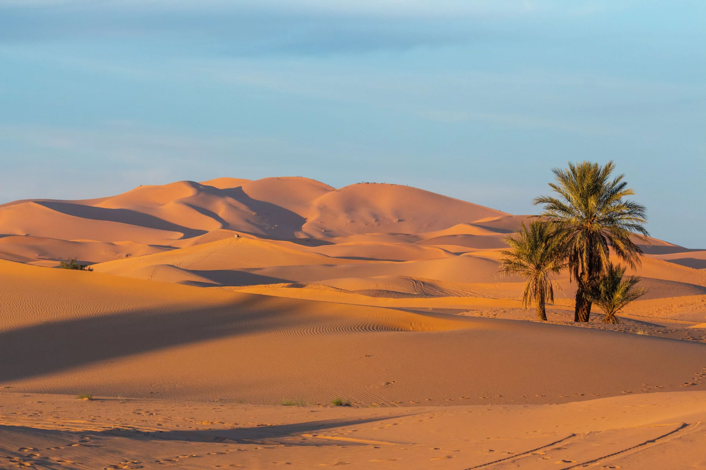

Le désert
Le désert est un lieu où l’immensité s’étend à perte de vue. Là où le silence règne, chaque grain de sable raconte une histoire ancienne. C’est un endroit qui incite à la réflexion et à l’introspection, offrant une beauté brute qui fascine autant qu’elle apaise.